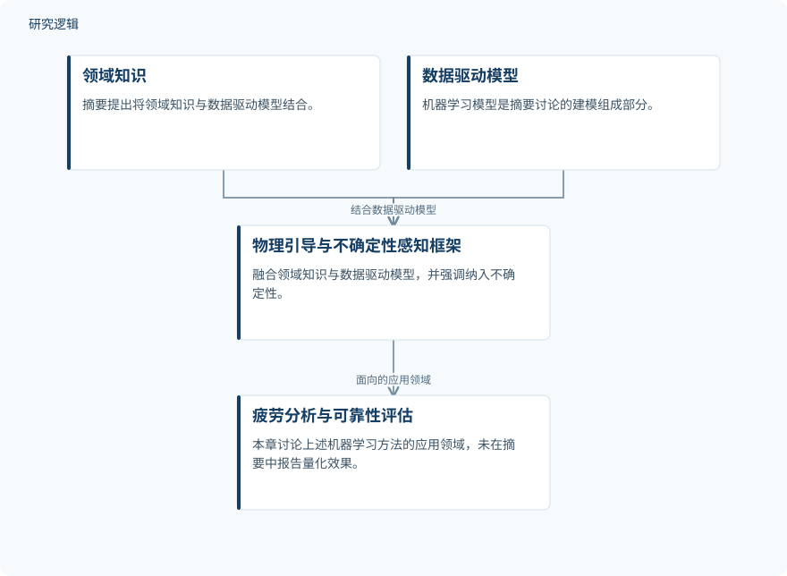

摘要解读
人工智能与机器学习在疲劳分析中的应用
Fatigue Analysis with Artificial Intelligence and Machine Learning
解读更新 2026-10-17 09:01 · 依据公开摘要整理，未核验全文细节
疲劳分析中的人工智能，如何面对数据有限、预测不确定性高的现实？本章围绕物理知识与机器学习的结合，讨论寿命预测、裂纹建模和疲劳设计，为理解数据驱动方法的适用边界提供线索。
文章目录
疲劳可靠性的难点：数据少，不确定性高
人工智能与机器学习可用于疲劳研究中的数据分析、寿命预测、裂纹检测和代理建模。但摘要特别指出，与许多工程应用不同，疲劳可靠性面临数据可用性有限和不确定性较高的挑战，这也构成了数据驱动方法需要回应的核心问题。
本章以这些挑战为出发点，讨论如何将领域知识纳入学习模型。其关注点不仅是预测任务本身，也包括预测能否具备稳健性与可靠性；本文解读仅依据所提供的完整摘要。
将物理引导与不确定性感知纳入学习框架
摘要介绍了物理引导和不确定性感知的机器学习框架，明确的方法关系是把领域知识与数据驱动模型相结合。同时，章节强调将不确定性纳入人工智能模型的重要性，但摘要没有说明具体的融合机制或不确定性处理算法。
在模型与任务层面，章节讨论神经网络及深度学习架构在 S-N 曲线预测、裂纹扩展建模，以及制造过程和微观组织建模中的应用。章节末尾还介绍了一种面向先进疲劳设计的神经优化方法，摘要未展开其实现细节。
依据摘要整理的物理与数据融合示意


仅概括摘要明确的知识融合关系及应用方向，不代表论文原图、具体算法流程或已验证效果。
下载 SVG图示关系说明
实线表示相邻阶段的信息流，虚线表示跨阶段联系或反馈。
领域知识 → 物理引导与不确定性感知框架：融入领域知识；数据驱动模型 → 物理引导与不确定性感知框架：结合数据驱动模型；物理引导与不确定性感知框架 → 疲劳分析与可靠性评估：面向的应用领域
摘要提供了方法方向，未报告量化性能
摘要传达的主要认识是：物理模型与机器学习相结合，是疲劳可靠性研究值得关注的方向；不确定性也应进入模型考虑范围。不过，这些表述属于章节强调的观点与前景判断，而不是摘要中已经通过量化比较证明的性能优势。
摘要没有给出预测误差、可靠性指标或优化收益，因此不能据此断言某种网络优于传统方法，也不能把所列应用场景理解为均已完成验证。
样本、比较与验证范围仍需查阅正文
当前摘要无法判断所涉数据的样本规模、材料种类、载荷条件和数据划分，也无法确认比较基线、验证方式及跨场景适用范围。摘要未报告这些信息，不等于章节没有讨论或开展相应工作。
对于物理约束如何进入模型、不确定性如何表征，以及神经优化采用什么目标与约束，摘要同样不足以支持具体判断。因此，目前更适合把本章作为方法阅读入口，而非直接采用其工程效果结论。
阅读启发：关注融合机制，而不只关注网络名称
阅读启发：进一步阅读时，可重点追问领域知识如何参与学习，以及模型输出如何表达不确定性。对于疲劳可靠性与设计优化的读者，还可关注寿命预测和神经优化之间是否建立了明确联系；这些是由摘要引出的阅读问题，并非当前资料已经回答的结论。
以上为本站阅读启发与建议，不是论文已验证的结论。